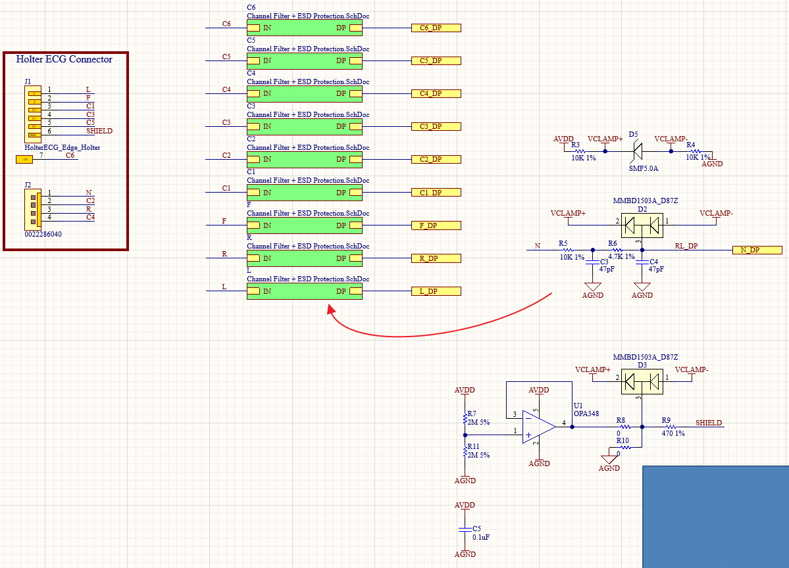
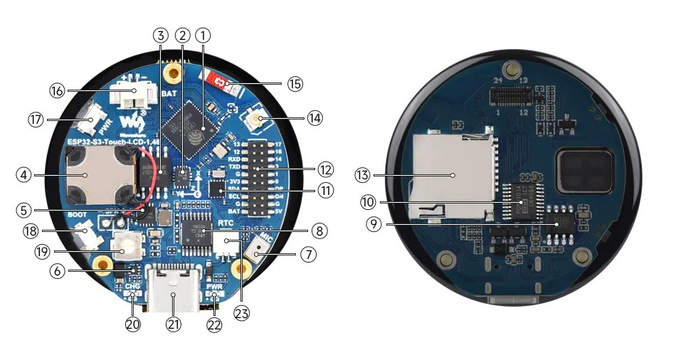
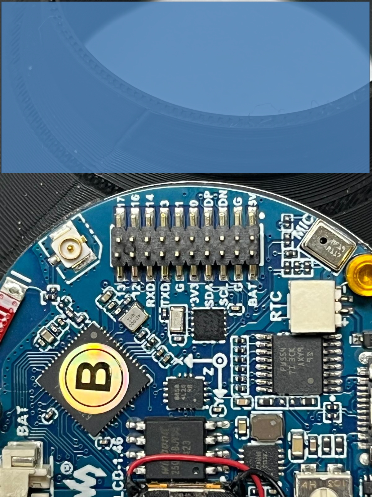
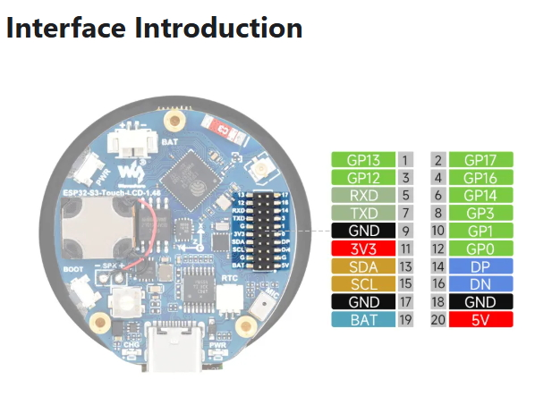

ESP32-S3 Pins Considerations
ESP32-S3 Pinout

Example Video ESP32-S3 - FSPI and HSPI demonstration with ADS1256 and ILI9341 LCD
Follow this guide from GitHub: atomic14/esp32-s3-pinouts
GPIO0: Pull-up (with a button to ground).
GPIO3: Leave disconnected.
GPIO45 (VDD_SPI): Leave disconnected.
GPIO46: Leave disconnected.
MUST NOT use GPIO35, GPIO36 or GPIO37. For 8MB or Octal PSRAM.
JTAG pins:
GPIO39, GPIO40, GPIO41, GPIO42
The behaviour of these pins is determined by eFuses in conjunction with GPIO3.
By default, if you haven't burnt any eFuses yet, these pins are safe to use*.
JTAG will be available over USB.
Also consider GPIO39 as it starts pulled-up at boot.

UART Pins:
GPIO43, GPIO44
Difference Between WROOM-1 and WROOM-2
WROOM-1-N16R8: Uses Quad SPI (QSPI) for the 16MB Flash and Octal SPI (OPI) for the 8MB PSRAM. It transfers flash data over a 4-bit bus.WROOM-2-N16R8: Uses Octal SPI (OPI) for both the 16MB Flash and the 8MB PSRAM. It transfers flash data over an 8-bit bus.
WROOM-1: GPIO35, GPIO36, and GPIO37 are exposed and available for you to use.
WROOM-2: GPIO35, GPIO36, and GPIO37 are tied to the internal Flash memory.
They are not available for your use (if you connect them to external components, the ESP32-S3 will crash).


Observe that GPIO1, GPIO2, GPIO3, GPIO4 pins are used to control some of the external peripherals like digital switches or as an indication to the microcontroller. Not sure about Pace Out.

Check file ADS1294_01.pdf for more details.
Observe the diagram below.

According to Gemini, ADS1294's 1st Channel IN1P and IN1N should be used for 3 Lead ECG. The 3rd Lead is the RLD_OUT pin
that goes to N_DP of the Connector Port.
Option 1: The "Clean Signal" Approach (1 Measuring Channel + RLD)
IN1P connects to LA, then...
IN1N connects to RA (Right Arm).
The 3rd wire connects to the RLD_OUT pin (Right Leg Drive) and goes to the patient's Right Leg (or anywhere else on the body away from the heart).
Option 2: The "Multi-Lead" Approach (2 Measuring Channels, No RLD)
IN1P connects to LA, then...
IN1N connects to RA (Right Arm).
IN2P connects to LL (Left Leg).
IN2N also connects to RA (Right Arm). You tie IN1N and IN2N together.
2nd option could be noisy according to Gemini.
According to Gemini:
If you are building a 3-wire (3-Lead) ECG, you do not need the WCT at all. Leave it disconnected.
WCT is needed only when using leads on chest to measure heart activity from different angles or axis.
Which is involving multpiple measuring channels.
Waveshare Page ESP32-S3-Touch-LCD-1.46
Github Page ESP32-S3-Touch-LCD-1.46 Github Link
Backup LocationC:\Users\tebun\Documents\oxydox\ESP32S3\ESP32-S3-Touch-LCD-1.46-Test
Project LocationC:\esp\v6.0.1\esp-idf\examples\ESP32-S3-Touch-LCD-1.46-Test\main\main.c
Project was heavily modified by Claude to migrate from ESP-IDF v5.0 to v6.0.1. Speech Recognition SR feature was removed.
A description of the migration is provided by claude as :
/oxydox/ESP32S3/ESP32-S3-Touch-LCD-1.46-Test/PORTING_SUMMARY.html Or in local folder.
I2C Interfaces:
UART Interfaces:
USB Interfaces:
From the ESP32-S3R8 datasheet it looks like GPIO14, GPIO16, GPIO17 and GPIO3 can be used for SPI. Need to find out which one is used for the LCD.
Check waveshare's page for all pins assignments.
Code Analysis: Simple Example Code Analysis by vendor waveshare
. Primary Code Analysis :
So according to the waveshare page, This code implements FREERTOS tasks for handling several tasks for peripheral drivers and the main application.
Github Page ESP32-S3-Touch-LCD-1.46 Github Link
Backup Location
Project Location



Project was heavily modified by Claude to migrate from ESP-IDF v5.0 to v6.0.1. Speech Recognition SR feature was removed.
A description of the migration is provided by claude as :
I2C Interfaces:
| Pin Marking | Function | Description |
|---|---|---|
| GND | GND | Power Ground |
| 3.3V | 3.3V | 3.3V Output |
| SCL | SCL (GPIO10) | SCL Cannot be used as regular GPIO |
| SDA | SDA (GPIO11) | SDA Cannot be used as regular GPIO |
| Pin Marking | Function | Description |
|---|---|---|
| GND | GND | Power Ground |
| 3.3V | 3.3V | 3.3V Output |
| TXD | TX (GPIO43) | UART data transmit or can be used as a regular GPIO |
| RX | RX (GPIO44) | UART data receive or can be used as a regular GPIO |
| Pin Marking | Function | Description |
|---|---|---|
| 5V | 5V | 5V Output |
| GND | GND | Power Ground |
| DN | DN (GPIO19) | USB Comms. If used as a regular GPIO, you must enter download mode before each program flash |
| DP | DP (GPIO20) | USB Comms. If used as a regular GPIO, you must enter download mode before each program flash |
From the ESP32-S3R8 datasheet it looks like GPIO14, GPIO16, GPIO17 and GPIO3 can be used for SPI. Need to find out which one is used for the LCD.
Check waveshare's page for all pins assignments.
Code Analysis: Simple Example Code Analysis by vendor waveshare
. Primary Code Analysis :
void Driver_Loop(void *parameter)
{
Wireless_Init();
while(1)
{
QMI8658_Loop();
PCF85063_Loop();
BAT_Get_Volts();
PWR_Loop();
vTaskDelay(pdMS_TO_TICKS(100));
}
vTaskDelete(NULL);
}
void Driver_Init(void)
{
PWR_Init();
BAT_Init();
I2C_Init();
EXIO_Init(); // Example Initialize EXIO
Flash_Searching();
PCF85063_Init();
QMI8658_Init();
xTaskCreatePinnedToCore(
Driver_Loop,
"Other Driver task",
4096,
NULL,
3,
NULL,
0);
}
void app_main(void)
{
Driver_Init();
SD_Init();
LCD_Init();
Audio_Init();
MIC_Speech_init();
// Play_Music("/sdcard","AAA.mp3");
LVGL_Init(); // returns the screen object
// /********************* Demo *********************/
Lvgl_Example1();
// lv_demo_widgets();
// lv_demo_keypad_encoder();
// lv_demo_benchmark();
// lv_demo_stress();
// lv_demo_music();
while (1) {
// raise the task priority of LVGL and/or reduce the handler period can improve the performance
vTaskDelay(pdMS_TO_TICKS(10));
// The task running lv_timer_handler should have lower priority than that running `lv_tick_inc`
lv_timer_handler();
}
}
So according to the waveshare page, This code implements FREERTOS tasks for handling several tasks for peripheral drivers and the main application.